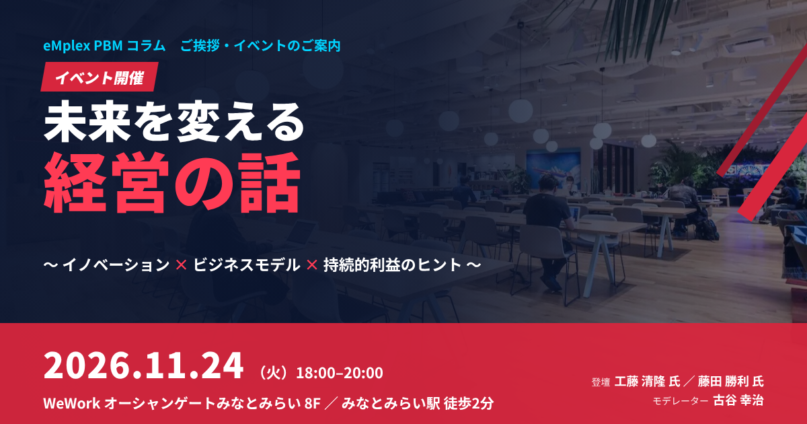
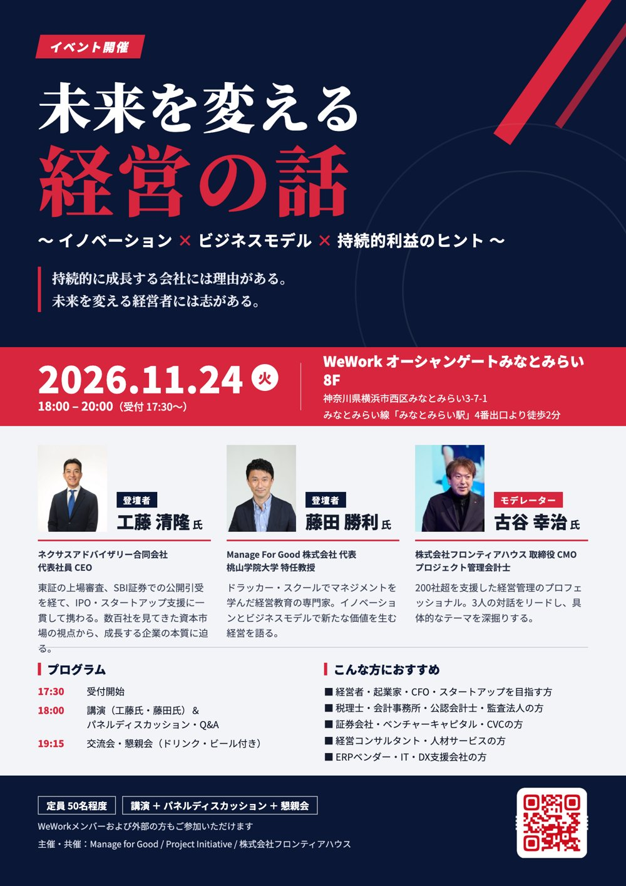
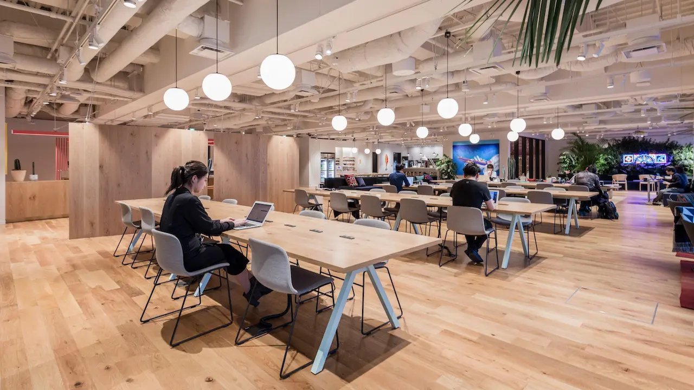
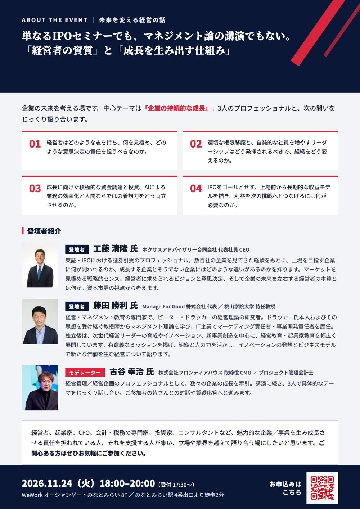

【イベント開催のご案内】未来を変える経営の話〜イノベーション×ビジネスモデル×持続的利益のヒント〜 2026年11月24日（火）WeWorkオーシャンゲートみなとみらい

ごあいさつ：「未来を変える経営の話」を開催します
イベントの概要
- 日時：2026年11月24日（火）18:00〜20:00（受付17:30〜）
- 会場：WeWork オーシャンゲートみなとみらい 8F（みなとみらい駅 徒歩2分）
- 登壇：工藤清隆氏（IPO・資本市場）、藤田勝利氏（ドラッカーマネジメント）
- モデレーター：古谷幸治（プロジェクト管理会計士）
- お申し込み：Peatixのイベントページ（定員50名程度）
プロジェクト管理会計士の古谷です。いつもコラムをお読みいただき、ありがとうございます。今回は、私がモデレーターを務めるイベントのご案内です。
2026年11月24日（火）の夜、横浜・みなとみらいのWeWorkオーシャンゲートみなとみらいで、「未来を変える経営の話〜イノベーション×ビジネスモデル×持続的利益のヒント〜」と題したリアルイベントを開催します。
売上を伸ばすだけで、会社は成長し続けられるのでしょうか。事業を拡大しても利益が残らない。新しい挑戦をしたくても、次の一手が見えない。変化の激しい時代に企業が持続的な成長を実現するためには、優れたビジネスモデルと、それを動かす経営者の資質・マインドが欠かせません。
本イベントでは、異なる専門性と豊富な実践経験を持つ二人のプロフェッショナルを迎え、企業の成長の本質に迫ります。「成長する企業を見極めてきたプロ」と「成長する組織をつくるプロ」。二人の視点が交わるとき、IPOの先にある持続的な成長の条件が見えてくるはずです。
▶ お申し込みはこちら（Peatix）
2026年11月24日（火）18:00〜20:00（受付17:30〜）／WeWork オーシャンゲートみなとみらい 8F／定員50名程度
開催概要
| 項目 | 内容 |
|---|---|
| イベント名 | 未来を変える経営の話〜イノベーション×ビジネスモデル×持続的利益のヒント〜 |
| 日時 | 2026年11月24日（火）18:00〜20:00（受付 17:30〜） |
| 会場 | WeWork オーシャンゲートみなとみらい 8F 神奈川県横浜市西区みなとみらい3-7-1 みなとみらい線「みなとみらい駅」4番出口より徒歩2分 |
| 形式 | リアル対面（講演＋パネルディスカッション＋懇親会） |
| 登壇者 | 工藤 清隆 氏（ネクサスアドバイザリー合同会社 代表社員 CEO） 藤田 勝利 氏（Manage For Good株式会社 代表／桃山学院大学 特任教授） |
| モデレーター | 古谷 幸治（株式会社フロンティアハウス 取締役 CMO／プロジェクト管理会計士） |
| 定員 | 50名程度（WeWorkメンバーおよび外部の方もご参加いただけます） |
| 主催・共催 | Manage for Good／Project Initiative／株式会社フロンティアハウス |
| お申し込み | Peatixのイベントページ（参加費等の詳細もこちら） |


会場は、みなとみらい線「みなとみらい駅」4番出口から徒歩2分のWeWorkオーシャンゲートみなとみらいです。WeWorkのメンバーの方はもちろん、外部の方もご参加いただけます。参加費やお申し込みの詳細は、Peatixのイベントページでご確認ください。
単なるIPOセミナーでも、マネジメント論の講演でもない
このイベントは、単なるIPOのセミナーでも、マネジメント論の講演でもありません。「経営者の資質」と「成長を生み出す仕組み」の両面から、企業の未来を考える場です。
中心のテーマは、「企業の持続的な成長」です。登壇者のお二人と、次の四つの問いをじっくり語り合います。
| No. | 問い |
|---|---|
| 01 | 経営者はどのような志を持ち、何を見極め、どのような意思決定の責任を担うべきなのか |
| 02 | 適切な権限移譲と、自発的な社員を増やすリーダーシップはどう発揮されるべきで、組織をどう変えるのか |
| 03 | 成長に向けた積極的な資金調達と投資、AIによる業務の効率化と人間ならではの着想力をどう両立させるのか |
| 04 | IPOをゴールとせず、上場前から長期的な収益モデルを描き、利益を次の挑戦へとつなげるには何が必要なのか |
一つ目の問いは、経営者の志と意思決定の責任です。数百社の上場準備の企業を見てきた立場から、成長する企業の経営者に共通するものは何かを探ります。
二つ目は、権限移譲とリーダーシップです。会社が大きくなる過程で、経営者がすべてを決める体制から、社員が自ら考えて動く組織へと変わっていく必要があります。適切な権限移譲と、自発的な社員を増やすリーダーシップのあり方を考えます。
三つ目は、資金調達と投資、そしてAIです。成長のための積極的な資金調達と投資、AIによる業務の効率化と、人間ならではの着想力。この二つをどう両立させるのかは、いま多くの経営者が直面しているテーマです。
四つ目は、IPOの先の成長です。IPOをゴールにせず、上場の前から長期的な収益モデルを描き、利益を次の挑戦へとつなげるには何が必要なのか。私自身、CFOとして上場準備に携わり、上場会社で経営企画を担当した経験から、プロジェクトごとの利益を見える化し、利益を生み出す仕組みをつくることの大切さを、具体的な話題として提供したいと考えています。

登壇者のご紹介
今回お迎えするのは、資本市場とマネジメントという、異なる領域のプロフェッショナルのお二人です。
登壇者：工藤 清隆 氏（ネクサスアドバイザリー合同会社 代表社員 CEO）
テーマは、資本市場・IPOの視点から「成長する企業と経営者の本質を問う」です。
工藤氏は、慶應義塾大学法学部を卒業後、1996年に東京証券取引所に入社。株式部、上場審査部、人事部などを経験し、上場審査ではマザーズ市場（現グロース市場）の創設にも関与されました。その後、マスターピース・グループ株式会社で常務取締役兼執行役員管理本部長などを歴任。2010年にSBI証券へ入社し、資本市場部、公開引受部などで経験を積まれ、2017年に執行役員公開引受部長に就任。ほぼ一貫してIPOの支援業務に携わってこられました。2023年にはベンチャーグロース推進部長として、TOKYO PRO Marketも含めたスタートアップの成長支援にも携わられています。
2026年6月に独立され、ネクサスアドバイザリー合同会社のCEOとして、東証での上場審査の経験、事業会社での上場準備の経験、SBI証券での公開引受・資本市場業務の経験を強みに、企業の成長支援やIPO全般に関するアドバイザー業務を展開されています。
東証・IPOにおける証券引受のプロフェッショナルとして、数百社の企業を見てきた経験から、上場を目指す企業に何が問われるのか、成長する企業とそうでない企業にはどのような違いがあるのかを探ります。マーケットを見極める戦略的なセンス、経営者に求められるビジョンと意思決定、そして企業の未来を左右する経営者の本質とは何か。主なテーマは、経営者の資質、市場を見る力、資金調達と投資、IPO後の成長です。
登壇者：藤田 勝利 氏（Manage For Good株式会社 代表／桃山学院大学 特任教授）
テーマは、マネジメント・イノベーションの視点から「成長を生み出す組織と仕組みを考える」です。
藤田氏は、上智大学を卒業後、住友商事、アクセンチュアを経て、米クレアモント大学院大学P.F.ドラッカー経営大学院で経営学修士号（MBA）を取得。生前のP.F.ドラッカー氏、およびその思想を受け継ぐ教授陣から、マネジメント理論全般を学ばれました。帰国後はIT企業の執行役員として、マーケティング責任者、事業開発責任者を歴任。大手企業との事業統合を機に独立後は、次世代の経営リーダーの育成、イノベーション・新事業創造の分野を中心に、経営教育・起業家教育に関する事業を幅広く展開されています。
現在は、Manage For Good株式会社の代表、桃山学院大学ビジネスデザイン学部の特任教授のほか、立命館大学客員研究教員、神奈川大学国際経営研究所客員研究員、一般社団法人Venture Café Tokyoのマネジメントアドバイザーも務められています。2024年には大学院大学至善館の経営修士課程を修了。著書に『新版 ドラッカー・スクールで学んだ本当のマネジメント』（日経BP、2021年）などがあります。
ドラッカーのマネジメント思想と、マーケティング・事業開発の実践経験をもとに、適切な権限移譲、人材の力を引き出す組織づくり、イノベーション、新たなビジネスモデルの創造について語っていただきます。主なテーマは、マネジメント、組織と人材、イノベーション、AI時代の経営です。
モデレーター：古谷 幸治（株式会社フロンティアハウス 取締役 CMO／プロジェクト管理会計士）
モデレーターは、私・古谷が務めます。私は、不動産デベロッパーの朋友建設に新卒で入社し、財務部で和議（現在の民事再生にあたる手続き）を経験しました。その後、ITのソフトウェア会社であるエンプレックス（現SCSK）で取締役CFOとして経営管理、経営企画、上場準備に携わり、プロジェクト管理会計の手法を体系化しました。ホリプロでは経営企画の責任者として、開示や子会社管理などのグループ経営管理、新規事業の立ち上げに携わりました。2020年に株式会社フロンティアハウスに参画し、取締役CMOとして、2022年の東京証券取引所TOKYO PRO Marketへの上場を経験しています。
支援してきた企業は200社を超えます。当日は、お二人の講演を受けて、具体的なテーマを掘り下げ、ご参加の皆さんとの対話や質疑応答へとつなげていきます。資本市場の視点、マネジメントの視点、そして利益を生み出す経営管理の視点。三つの視点が交わる議論にしたいと考えています。
当日のプログラム
| 時間 | 内容 |
|---|---|
| 17:30 | 受付開始 |
| 18:00 | 講演（工藤氏・藤田氏）＆パネルディスカッション・Q&A（モデレーター：古谷） |
| 19:15 | 交流会・懇親会（ドリンク・ビール付き） |
| 20:00 | 終了 |
プログラムは変更になる場合があります。
講演とパネルディスカッションでは、お二人の講演をもとに、スタートアップや既存の事業が直面する「利益構造の壁」と「意思決定」、IPOの先の持続的な成長について、実践的な経営のトークを繰り広げます。会場の皆さんからのご質問にもお答えします。
交流会・懇親会では、ドリンクやビールを片手に、登壇者やご参加の皆さん同士で、名刺交換や交流をお楽しみいただけます。立場や業界を越えた出会いも、このイベントの大切な目的の一つです。
こんな方におすすめです
企業を成長させたい方、企業の成長を支えたい方に向けたイベントです。
| 対象 | こんな方に |
|---|---|
| 経営者・起業家・CFO・スタートアップを目指す方 | 事業を成長させ、持続的に利益を生み出す仕組みをつくりたい方。新規事業、ビジネスモデルの変革、IPO、企業価値向上を目指す方 |
| 税理士・会計事務所・公認会計士・監査法人の方 | 顧問先への経営支援や付加価値の高いサービスを強化したい方。税務・会計の枠を越えて、顧問先の事業成長や経営改善に貢献したい方 |
| 証券会社・ベンチャーキャピタル・CVCの方 | IPO支援、資本政策、企業価値評価、スタートアップの成長支援に携わる方。将来性のある企業や新たなビジネスの可能性と出会いたい方 |
| 経営コンサルタント・経営支援会社・人材サービスの方 | 経営戦略や利益構造の改善を通じて、企業の成長を支援したい方 |
| ERPベンダー・IT・DX支援会社の方 | システムやツールの提案にとどまらず、経営課題そのものを起点に、経営者やCFOと対話したい方 |
経営者、起業家、CFO、会計・税務の専門家、投資家、コンサルタントなど、魅力的な企業や事業を生み、成長させる責任を担っている方、そしてそれを支援する方が集い、立場や業界を越えて語り合う場にしたいと思っています。
最後に：未来を変えるのは、今日の気づきと新たな出会い
持続的に成長する会社には、理由があります。そして、未来を変える経営者には、志があります。
私はこれまで、プロジェクト型ビジネスの経営管理を通じて、多くの会社の成長と苦境の両方を見てきました。売上が伸びても利益が残らない会社と、着実に利益を積み上げ、次の挑戦に投資できる会社。その違いは、経営者の志と、利益を生み出す仕組みの両方にあると感じています。今回のイベントは、まさにその二つを、資本市場とマネジメントのプロフェッショナルと一緒に考える場です。
会社の未来を変えるのは、今日の気づきと、新たな出会いかもしれません。持続的な成長を実現するためのヒントを、一緒に見つけてみませんか。会場で皆さんにお会いできることを、楽しみにしています。
▶ お申し込みはこちら（Peatix）
2026年11月24日（火）18:00〜20:00（受付17:30〜）／WeWork オーシャンゲートみなとみらい 8F／定員50名程度
よくある質問（FAQ）
Q. イベントの日時と会場はどこですか？
A. 2026年11月24日（火）18:00〜20:00（受付17:30〜）、WeWork オーシャンゲートみなとみらい 8F（神奈川県横浜市西区みなとみらい3-7-1）です。みなとみらい線「みなとみらい駅」4番出口より徒歩2分です。
Q. WeWorkのメンバーでなくても参加できますか？
A. はい。WeWorkメンバーの方に加え、外部の方もご参加いただけます。お申し込みはPeatixのイベントページから受け付けています。
Q. 参加費や定員を教えてください。
A. 定員は50名程度です。参加費などの詳細は、Peatixのイベントページでご確認ください。
Q. どのような内容のイベントですか？
A. 工藤清隆氏・藤田勝利氏による講演とパネルディスカッション（モデレーター：古谷幸治）、質疑応答、ドリンク・ビール付きの交流会・懇親会で構成されるリアル対面のイベントです。中心テーマは企業の持続的な成長です。